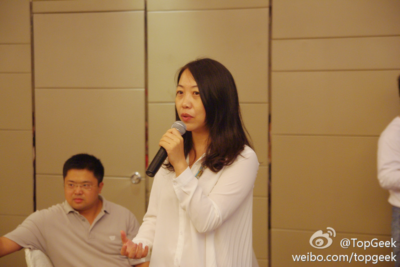
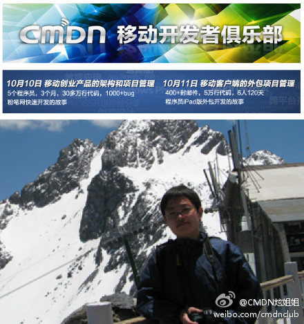

别人说我善良，是个好人的时候，我总是不大受用，原来是这个原因。 //@刘松--甲骨文: 善良换成慈悲，这句子更恰当，慈悲是比善良更去主动理解的情怀，善良有天然，被动的含义，而且在国人辞典里有任人宰割的含义，比如，中国人民很善良•••@西门爱宝V:在你有权力的时候，对别人好一点。善良比聪明重要，因为善良里有智慧。
有一次又被人发了个好人牌，我不知怎么接话，于是提起刚看完的美剧＜绝望主妇＞大结局。Susan是剧中心肠最好，最善良单纯的人物，但最后命运是四主妇中最差的。虽然故事是编剧掌控，但美剧的价值观都相当主流。至少此剧结局告诉我，仅是善良是没用的。
活动反馈一定不错。用敏捷方式组织的线下活动已经成为一种标杆，互动强，气氛活跃，用寓言故事游戏阐明方法，很值得效仿。更关键的是，发现参会的人，一个比一个能说，一个比一个能搞，哪里有传说中的技术宅啊。[呵呵]@CSDN移动开发者俱乐部:今天@CSDN移动 对#CMDN Club#的活动（网页链接）直播不太给力，但是这一点也不影响现场与会者的参与热情。今日签到72人，9点会议结束前3分钟，会场还有66人。厚厚的一打子收集上来的调查问卷，满载着与会者对活动的真实评价和期望。
今年6月份在上海的时候，参加了TopGeek组织的活动，现场感想：北京IT行业比上海繁荣，但很有意思，上海的IT技术活动比北京更有组织，可能是上海更职业化和更商业化些。@TopGeek:通过@微盘 分享社区经理培训之五，上海16个社区快速演讲“如何从0开始做一个很棒的社区” 文件"李力.jpg"，来自伟大祖国的帝都的社区活跃人物来到魔都社区现场 网页链接 
CSDN首页的“社区活动”栏目专门拿出来支持一些公益性的技术活动，帮助这些活动吸引参会者和关注，发现北京上海两地的活动很不一样。上海的活动组织更细致，连自己用博客发的活动文章，排版都做得美观讲究。网页链接
今晚去听听。@_李宁_@CSDN移动开发者俱乐部:李宁是@程序员杂志 iPad版的项目负责人。在过去的120天里，他和6个人一起，经历了400+封邮件，将近5万行代码，完成了一个iPad App。象所有外包项目一样，抓狂与欣喜交织在一起，整个过程并不轻松，但也包含了很多值得回味的片段。今晚，#CMDN Club# 听他的项目分享。网页链接 @CSDN移动 
我喜欢这段：“而AWS是一个开发者的国度——他们是驱动AWS前行的力量。开发者在AWS上创造他们的应用，他们创造新的服务。AWS的云设施租赁服务通过弹性的基础设施提供了可供分配的负载。它像是一台巨型的可编程计算机，而开发者完全可以掌控它。”@粥稀稀的碗:【亚马逊放宽心，甲骨文没戏】完全是开发者们的吐槽嘛@Ada李力，@thomasluo骆轶航 新作 - PingWest 网页链接
移动开发者俱乐部的开始暖场活动，是模拟发包方与接包方的互动游戏。我当了回甲方，经过讨论，把项目交给了某开发团队。当我胡诌完自己的需求后，旁边的人掏出手机，说他开发的一个应用已经实现了我的所有需求。神一般的移动开发领域…
这个共识跟在国内的你我有什么关系? //@BrokenWindows:有趣的是,虽然各自背景不同,但是大家基本有一个共识:China is the last castle of global capitalism@BrokenWindows:这真是一顿很有趣的晚饭。五个美国富裕中产阶级：我表舅，国民党高官后代，其父官至中将，49年全家迁往台湾；他的夫人，正统白人，著名传记作家，能讲流利的汉语；一位美国的共产主义信仰者，成长于一个美国共产主义运动世家；两位和蔼的中产阶级主妇。加上我父亲，老革命后代。和我，改良社会主义者
 //@刘松--甲骨文: 善良换成慈悲，这句子更恰当，慈悲是比善良更去主动理解的情怀，善良有天然，被动的含义，而且在国人辞典里有任人宰割的含义，比如，中国人民很善良•••
//@刘松--甲骨文: 善良换成慈悲，这句子更恰当，慈悲是比善良更去主动理解的情怀，善良有天然，被动的含义，而且在国人辞典里有任人宰割的含义，比如，中国人民很善良•••